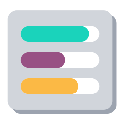

More apps by Terrabit
Other modules from the same publisher, built to work together. All apps →

Long tasks in parallel steps, with progress
Technical module: runs a long task step by step in a progress dialog, several steps at a time, instead of a single request that times out or blocks the screen.
A model inherits task.progress.mixin and returns _task_progress_action(...) from a
button. The dialog calls the step method once per item (a page of a PDF, a batch of
records), a few in parallel, each in its own request and transaction, and shows:
When every item is done, the dialog calls the finish method and opens the action it returns (a preview, the created records). Closing is blocked while items are running.
Used by: deltatech_ai_purchase_pdf (vendor invoice PDF read with AI page by page).
In the consumer model:
class MyWizard(models.TransientModel):
_name = "my.wizard"
_inherit = ["task.progress.mixin"]
def action_run(self):
return self._task_progress_action(
"run_part",
items=[0, 1, 2],
finish="action_done",
parallel=3,
title=self.env._("Reading the document"),
unit_label=self.env._("parts"),
count_label=self.env._("lines"),
)
def run_part(self, index):
# one item, one transaction: write the result on a row of its own
...
return 12 # added to the counter
def action_done(self):
return {"type": "ir.actions.act_window", "res_model": self._name, "res_id": self.id}
Steps running at the same time must not write on the same row (the wizard included),
otherwise they fail with serialization errors: keep each item's result on a row of its
own and merge them in the finish method. A parallel higher than the number of HTTP
workers of the server only queues the requests.
Without a wizard, the steps run on the records themselves (an action of the list view):
def action_send_to_carrier(self):
return self.env["task.progress.mixin"]._task_progress_action(
"action_send_to_carrier_one", # called on each order: order.action_send_to_carrier_one()
self.ids,
model=self._name,
item_names=self.mapped("name"),
parallel=1,
auto_start=False,
show_items=True,
intro=self.env._("Send the orders to the carrier."),
finish="action_download_awb_labels", # called on the orders sent
finish_mode="button",
labels={"start": self.env._("Send"), "finish": self.env._("Print AWBs")},
)
def action_send_to_carrier_one(self):
...
return {"status": "warning", "message": "uncertain result, check at the carrier"}
A step returns a number (the counter) or {"status", "message", "count"}: success,
warning (done, shown to check by hand, never run again) or error (run again by the
retry button, like a step that raises).
With init, the dialog first calls record.init(), which returns
{"items": [...], "item_names": [...], "total": n, "detail": "..."}: the work is prepared
on the server (a file read, a plan made) while the dialog shows Preparing.... With
close, record.close() is called when the dialog is closed after a complete run, and the
action it returns is opened.
init prepares the items: it showed "0 / 0".model, without a record): the
"Send to Carrier" dialog of deltatech_delivery.warning is done and never run again (a result to check
by hand), error is run again by the retry button.show_items); start button with an
introduction (auto_start=False, intro); finish as a button on the items done
(finish_mode="button"); init method that prepares the items when the dialog opens;
close method called when the dialog is closed after a complete run.deltatech_delivery (stable) depends on it.deltatech_ai_purchase_pdf, made generic
through task.progress.mixin.Our 350+ apps on the Odoo Apps Store are used in Odoo implementations across Europe, the Americas, Asia and Africa — by companies we have never even met. That is the advantage of building modules that simply work.
Questions about this module, or need it adapted to your processes? Write to us — the developers who build it will answer.
Terrabit support →Other modules from the same publisher, built to work together. All apps →